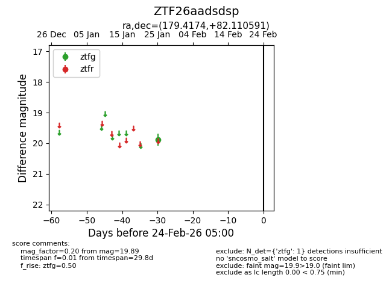
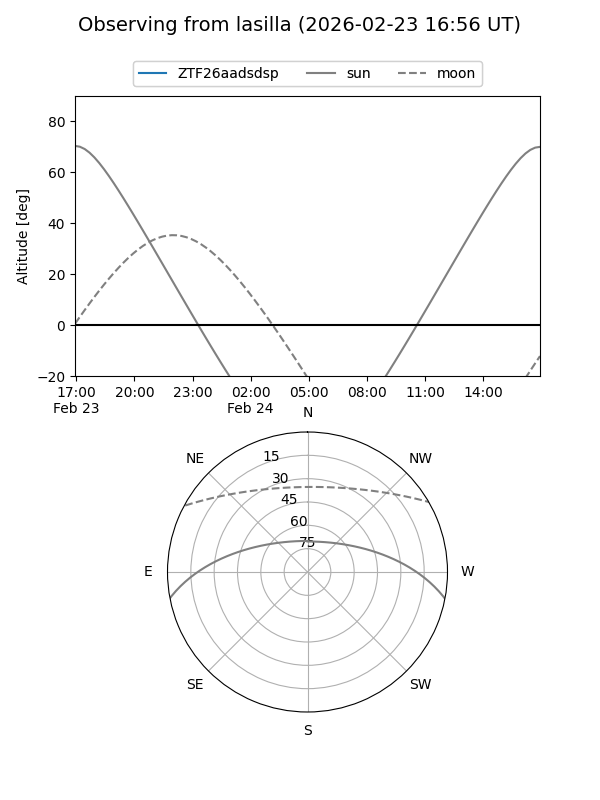
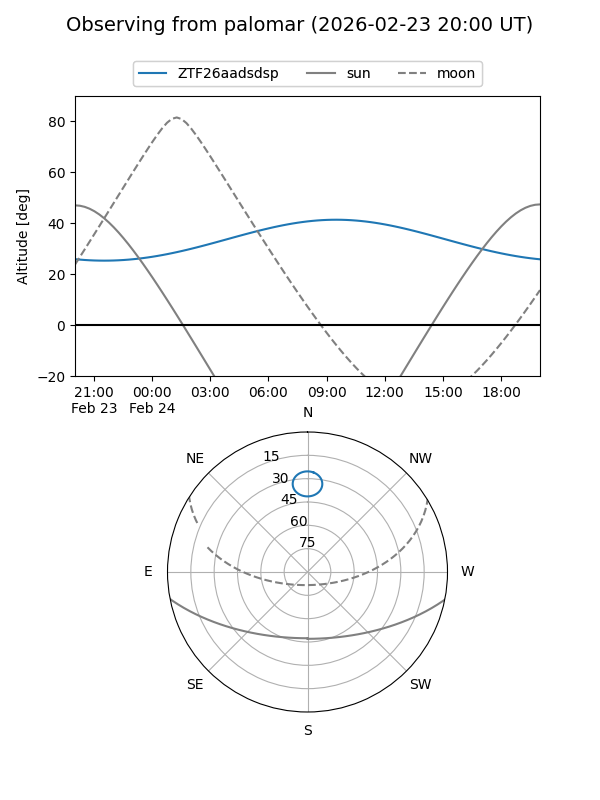

ZTF26aadsdsp
Target ZTF26aadsdsp at 2026-01-27 09:56
Aliases and brokers:
FINK: link
Lasair: link
ALeRCE: link
alt names
ZTF26aadsdsp (ztf,fink_ztf)
Coordinates:
equatorial (ra, dec) = 179.4174,+82.11059
equatorial (HMS+DMS) = 11:57:40.18,+82:06:38.13
galactic (l, b) = (125.1584,+34.78387)
Flags:
Photometry:
last ztfg=19.89
1 ztfg detections
Lightcurve

Visibility


Additional plots